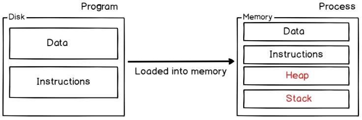
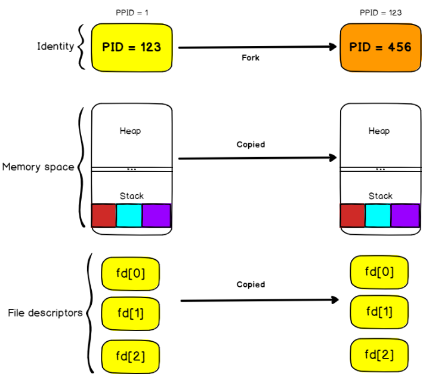
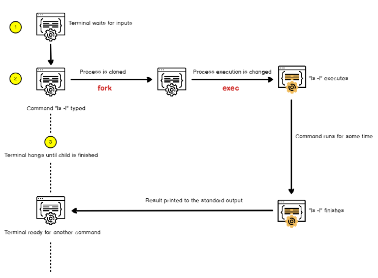
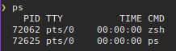
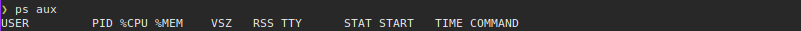

Introduction
As a system administrator, you will probably interact with processes in many different ways.
Sometimes, you may want to run commands in order to identify processes that are consuming a lot of resources on your host.
You may have receive a call from a user stating that one of their processes got stucked and that you may need to kill it in order to keep on working.
Processes are really at the center of the Linux operating system : created by the Kernel itself, they represent running operations currently happening on your Linux host.
Processes are everywhere, they may run in the background or you may choose to initialize them by yourself for custom operations.
You may choose to start them, to interrupt them, to resume them or to stop them.
In this tutorial, we are taking a very close look at processes, what they are, and how they are used on our operating system.
We will discover all the commands associated with processes, what signals are and how we can assign more computational resources to our existing processes.
Here we go...
Learning outcomes
- What processes are and how they are created on a Linux system
- How processes can be identified on a Linux system
- What background and foreground processes are
- What signals are and how they can be used to interact with processes
- How to use the
pgrepas well as thepkillcommand effectively - How to adjust process priority using
niceandrenice - How to see process activity in real-time on Linux
Linux Processes Basics
In short, processes are running programs on your Linux host that perform operations such as writing to a disk, writing to a file, or running a web server for example.
Process have a owner and they are identified by a process ID (also called PID)

On the other hand, programs are lines or code or lines of machine instructions stored on a persistent data storage.
They can just sit on your data storage, or they can be in execution, i.e running as processes.
Difference Program & Proces

In order to perform the operations they are assigned to, processes need resources : CPU time, memory (such as RAM or disk space), but also virtual memory such as swap space in case your process gets too greedy.
Obviously, processes can be started, stopped, interrupted and even killed.
Before issuing any commands, let’s see how processes are created and managed by the kernel itself.
Process Initialization on Linux
As we already stated, processes are managed by the Kernel on Linux.
However, there is a core concept that you need to understand in order to know how Linux creates processes.
By default, when you boot a Linux system, your Linux kernel is loaded into memory, it is given a virtual filesystem in the RAM (also called initramfs) and the initial commands are executed.
One of those commands starts the very first process on Linux.
Historically, this process was called the init process but it got replaced by the systemd initialization process on many recent Linux distributions.
To prove it, run the following command on your terminal:
$ ps -aux | head -n 2
Note
Your mileage may very, you will have different metrics but the structure will be the same.

As you can see, the systemd process has a PID of 1.
If you were to print all processes on your system, using a tree display, you would find that all processes are children of the systemd one.
$ pstree

It is noteworthy to underline the fact that all those initialization steps (except for the launch of the initial process) are done in a reserved space called the kernel space.
The kernel space is a space reserved to the Kernel in order for it to run essential system tools properly and to make sure that your entire host is running in a consistent way.
On the other hand, user space is reserved for processes launched by the user and managed by the kernel itself.
User & Kernel Space

As a consequence, the systemd process is the very first process launched in the user space.
Process Creation using fork and exec
When you are creating and running a program on Linux, it generally involves two main steps : fork and execute.
Fork operation
Fork is a clone operation, it takes the current process, also called the parent process, and it clones it in a new process with a brand new process ID.
When forking, everything is copied from the parent process : the stack, the heap, but also the file descriptors meaning the standard input, the standard output and the standard error.
It means that if my parent process was writing to the current shell console, the child process will also write to the shell console.
Fork Operation

The execution of the cloned process will also start at the same instruction as the parent process.
Execute Operation
The execute operation is used on Linux to replace the current process image with the image from another process.
On the previous diagram, we saw that the stack of the parent process contained three instructions left.
As a consequence, the instructions were copied to the new process but they are not relevant to what we want to execute.
The exec operation will replace the process image (i.e the set of instructions that need to be executed) by another one.
Exec Operation

If you were for example to execute the exec command in your bash terminal, your shell would terminate as soon as the command is completed as your current process image (your bash interpreter) would be replaced with the context of the command you are trying to launch.
For example run:
$ exec ls -l
Time to open a new terminal :P
If you were to trace the system calls done when creating a process, you would find that the first C command called is the exec one.
Try the following:
$ strace ls -l

Creating processes from a shell environment
When you are launching a shell console, the exact same principles apply when you are launching a command.
A shell console is a process that waits for input from the user.
It also launches a bash interpreter when you hit Enter and it provides an environment for your commands to run.
But the shell follows the steps we described earlier.
When you hit enter, the shell is forked to a child process that will be responsible for running your command. The shell will wait patiently until the execution of the child process finishes.
On the other hand, the child process is linked to the same file descriptors and it may share variables that were declared on a global scope.
The child process executes the “exec” command in order to replace the current process image (which is the shell process image) in the process image of the command you are trying to run.
The child process will eventually finish and it will print its result to the standard output it inherited from the parent process, in this case the shell console itself.
Shell Command Execution

Now that you have some basics about how processes are created in your Linux environment, let’s see some details about processes and how they can be identified easily.
Identifying running processes on Linux
The easiest way to identify running processes on Linux is to run the ps command.

By default, the ps command will show you the list of the current running processes owned by the current user.
In this case, only two processes are running for my user : the bash called zsh interpreter and the ps command I have run into it.
Note:
Your
bashinterperter will bebash, unless you changed it.
The important part here is that processes have owners, most of the time the user who run them in the first place.
To illustrate this, let’s have a listing of the first ten processes on your Linux operating system, with a different display format.
Try the following:
$ ps -ef | head -n 10

As you can see here, the top ten processes are owned by the user “root".
This information will be particularly important when it comes to interacting with processes with signals.
To display the processes that are owned and executed by the current connected user, run the following command:
$ ps u

There are plenty of different options for the ps command, and they can be seen by running the manual command, remember man:
$ man ps
From experience, the two most important commands in order to see running processes are:
$ ps aux

That corresponds to a BSD-style process listing, where the following command:
$ ps -ef
UID PID PPID C STIME TTY TIME CMD
Corresponds to a POSIX-style process listing.
They are both representing current running processes on a system, but the first one has the “u” option for “user oriented” which makes it easier to read process metrics.

Now that you have seen what processes are and how they can be listed, let’s see what background and foreground processes are on your host.
Background and foreground processes
The definition of background and foreground processes are pretty self-explanatory.
Jobs and processes in the current shell
A background process on Linux is a process that runs in the background, meaning that it is not actively managed by a user through a shell for example.
On the opposite side, a foreground process is a process that can be interacted with via direct user input.
Let’s say for example that you have opened a shell terminal, and that you typed the following command in your console.
$ sleep 10000
As you probably noticed, your terminal will hang until the termination of the sleep process. As a consequence, the process is not executed in the background, it is executed in the foreground.
I am able to interact with it. If I press Ctrl + Z, it will directly send a stop signal to the process for example.

However, there is a way to execute the process in the background.
To execute a process in the background, simply put a “&” sign at the end of your command. You might remember doing this when we launched konsole in Xfce Terminal with the &.
$ sleep 10000 &
As you can see, the control was directly given back to the user and the process started executing in the background.

To see your process running, in the context of the current shell, you can execute the jobs command
$ jobs

Jobs are a list of processes that were started in the context of the current shell and that may still be running in the background.
As you can see in the example above, I have two processes currently running in the background.
The different columns from left to right represent the the job ID, the process state (that you will discover in the next section), and the command executed.
Using bg and fg commands
In order to interact with jobs, you have two commands available : bg and fg.
The bg command is used on Linux in order to send a process to the background and the syntax is as follows
$ bg %<job_id>
Similarly, in order to send a process to the foreground, you can use the fg in the same fashion
$ fg %<job_id>
If we go back to the list of jobs of our previous example, if I want to bring the job 3 to the foreground, meaning to the current shell window, I would execute the following command
$ fg $2

By issuing a Ctrl + Z command, I am able to stop the process. I can link it with a bg command in order to send it to the background.
Now that you have a better idea of what background and foreground processes are, let’s see how it is possible for you to interact with process using signals.
Interacting with processess using Signals
On Linux, signals are a form of interprocess communication (also called IPC) that creates and sends asynchronous notifications to running processes about the occurrence of a specific event.
Signals are often used in order to send a kill or a termination command to a process in order to shut it down (also called kill signal).
In order to send a signal to a process, you have to use the kill or pkill command.
$ kill -<signal number> <pid>
$ kill -<signal number> <process_name>
$ pkill -<signal number> <process_name>
For example, in order to force a HTTPD process (PID = 123) to terminate (without a clean shutdown), you would run the following command:
$ kill -9 123
$ pkill -9 HTTPD
As explained, there are many signals that one can send in order to notify a specific process.
Here is the list of the most common used ones :
-
SIGINT : short for signal interrupt is a signal used in order to interrupt a running process. It is also the signal that is being sent when a user pressed Ctrl + C on a terminal;
-
SIGHUP : short for signal hangup is the signal sent by your terminal when it is closed. Similarly to a SIGINT, the process terminates;
-
SIGKILL : signal used in order to force a process to stop whether it can be gracefully stopped or not. This signal can not be ignored except for the init process (or the systemd one on recent distributions);
-
SIGQUIT : specific signal sent when a user wants to quit or to exit the current process. It can be invoked by pressing Ctrl + D and it is often used in terminal shells or in SSH sessions;
-
SIGUSR1, SIGUSR2 : those signals are used purely for communication purposes and they can be used in programs in order to implement custom handlers;
-
SIGSTOP : instructs the process to stop its execution without terminating the process. The process is then waiting to be continued or to be killed completely;
-
SIGCONT : if the process is marked as stopped, it instructs the process to start its execution again. In order to see the full list of all signals available, you can run the following command
$ kill -l
1) SIGHUP 2) SIGINT 3) SIGQUIT 4) SIGILL
5) SIGTRAP 6) SIGABRT 7) SIGBUS 8) SIGFPE
9) SIGKILL 10) SIGUSR1 11) SIGSEGV 12) SIGUSR2
13) SIGPIPE 14) SIGALRM 15) SIGTERM 16) SIGSTKFLT
17) SIGCHLD 18) SIGCONT 19) SIGSTOP 20) SIGTSTP
21) SIGTTIN 22) SIGTTOU 23) SIGURG 24) SIGXCPU
25) SIGXFSZ 26) SIGVTALRM 27) SIGPROF 28) SIGWINCH
29) SIGIO 30) SIGPWR 31) SIGSYS 34) SIGRTMIN
35) SIGRTMIN+1 36) SIGRTMIN+2 37) SIGRTMIN+3 38) SIGRTMIN+4
39) SIGRTMIN+5 40) SIGRTMIN+6 41) SIGRTMIN+7 42) SIGRTMIN+8
43) SIGRTMIN+9 44) SIGRTMIN+10 45) SIGRTMIN+11 46) SIGRTMIN+12
47) SIGRTMIN+13 48) SIGRTMIN+14 49) SIGRTMIN+15 50) SIGRTMAX-14
51) SIGRTMAX-13 52) SIGRTMAX-12 53) SIGRTMAX-11 54) SIGRTMAX-10
55) SIGRTMAX-9 56) SIGRTMAX-8 57) SIGRTMAX-7 58) SIGRTMAX-6
59) SIGRTMAX-5 60) SIGRTMAX-4 61) SIGRTMAX-3 62) SIGRTMAX-2
63) SIGRTMAX-1 64) SIGRTMAX
Signals and Process States
Now that you know that it is possible to interrupt, kill or stop processes, it is time for you to learn about processes states.
Processes have many different states, they can be :
-
Running : processes running are the ones using some computational power (such as CPU time) in the current time. A process can also be called “runnable” if all running conditions are met, and it is waiting for some CPU time by the CPU scheduler.
-
Stopped : a signal is stopped is linked to the SIGSTOP signal or to the Ctrl + Z keyboard shortcut. The process execution is suspended and it is either waiting for a SIGCONT or for a SIGKILL.
-
Sleeping : a sleeping process is a process waiting for some event or for a resource (like a disk) to be available. Here is a diagram that represents the different process states linked to the signals you may send to them.
Process signal states